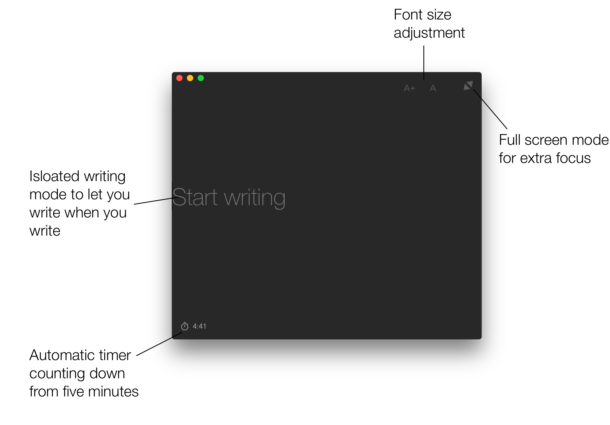
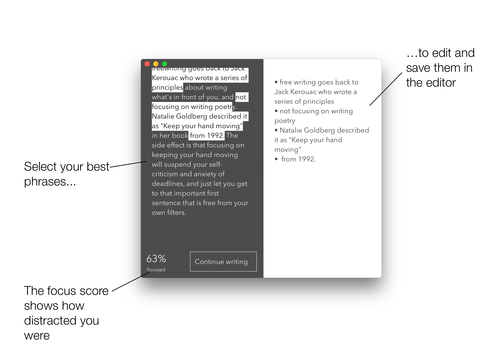

Freewriter A text editor that hacks your attention
How it works


Download
Get updates
Learn more
Wikipedia: Free writing
Reality is Broken by Jane McGonigal
Jack Kerouac: Belief & technique for modern prose
Jack Kerouac: Essentials of Spontaneous Prose
Natalie Goldberg: Writing Down the Bones: Freeing the Writer Within
Peter Elbow: Freewriting